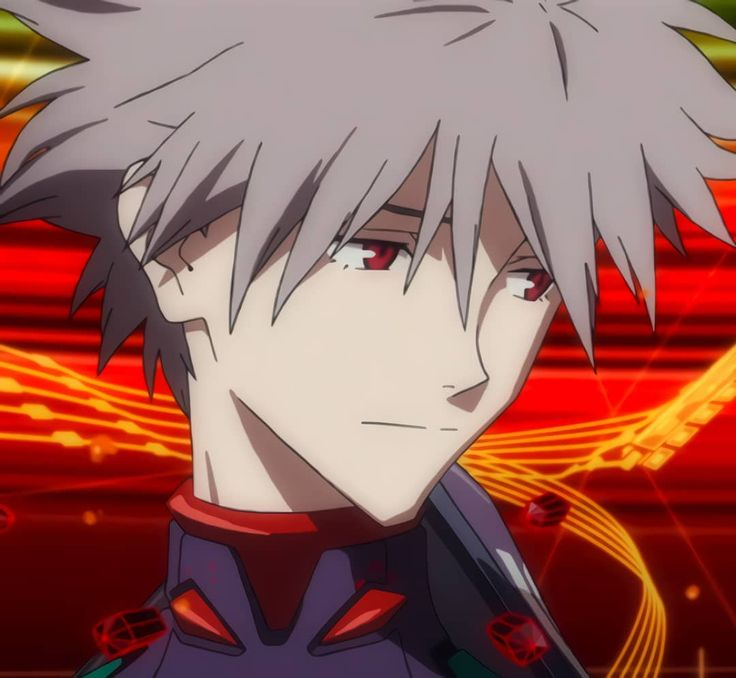
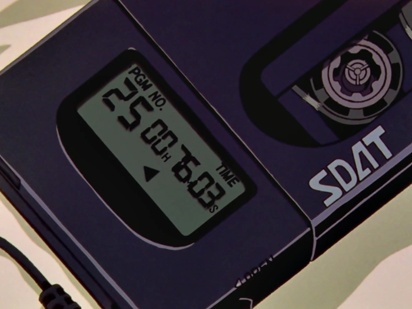
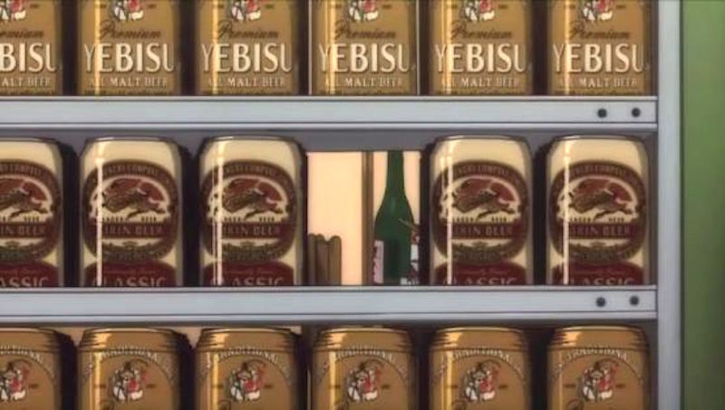
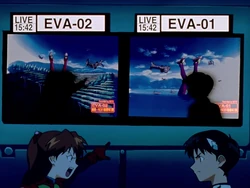
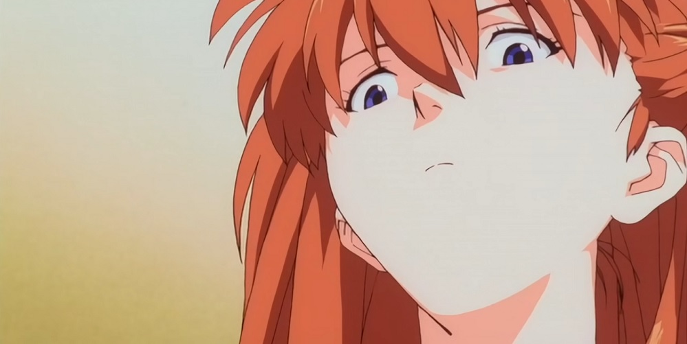

CURIOSIDADES
Las cejas de Ritsuko Akagi son de distinto color porque su color de pelo natural es rojo y se tiñe de rubio.
El Segundo Impacto ocurrió el 13 de septiembre del año 2000. También es el día de nacimiento de Kaworu Nagisa.

En el episodio 02 se ve por primera vez el SDAT de Shinji. Es un reproductor de música digital en cinta magnética tipo cassette.
Las pistas que escucha Shinji van del 25 al 26 y viceversa, lo que puede
ser una referencia al final de la serie, transcurrido en los episodios 25 y 26.

La cerveza que ingiere Misato Katsuragi en los primeros capítulos es una marca de cerveza "real".
Esta marca es conocida como "YEBISU".
La firma de dicha cerveza se quejó a Gainax y por eso en los capítulos
posteriores al 05, Misato cambia de marca de cerveza.

En el episodio 09 el EVA-02 destruye un edificio que tenía un cartel que decía "Studio Fantasia".
Este era el estudio de animación que trabajó con Gainax en la realización de Otaku no Video.

Los nombres de casi todos los personajes son de barcos (o tipos de barcos) de guerra japoneses:
Akagi, Aoba, Ayanami, Fuyutsuki, Hyuga,
Katsuragi, Soryu, Langley (estadounidense). También muchos nombres están basados en
términos náuticos: Ikari/ancla;
Kaji/remo corto o timón; Rokubungi/sextante (instrumento para medir ángulos); Kiel (keel)/quilla.
Los nombres de Hikari Horaki y sus hermanas (Kodama y Nozomi) son los tres servicios del Shinkansen (tren bala).
Cuando Asuka se muda con Shinji antes de la pelea sincronizada, cierra una puerta corrediza y dice que
"es el muro indestructible de Jericó". Esta es una escena de la película It Happened One Night.
